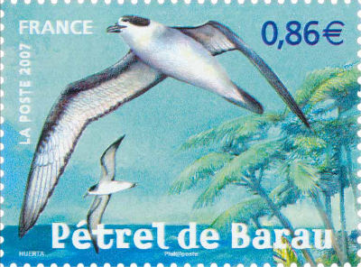

Le pétrel de Barau (Pterodroma baraui) est un oiseau endémique de la Réunion. C'est un oiseau marin de taille moyenne de la famille des Pterodroma. Avec environ 38cm d'envergure, ses ailes sont longues et étroites et ses narines sont tubulaires. Les Réunionnais l'appellent aussi Taille-vent ou tayvan.
Le pétrel designe plusieurs espèces d'oiseaux marins de la famille des procellariidés. Ce sont des palmipèdes avec de grandes ailes et un bec crochu surmonté de ses narines formant un tube. Ils vivent généralement en haute mer et ne viennent sur terre que pour pondre leur œuf.
Ce n'est qu'après la capture de l'un d'eux en 1963 par l'ornithologue Christian Jouanin, et sa description précise que la singularité de ce pétrel est soulignée. Il prendra le nom de Charles-Armand Barau ingénieur agronome et passiné d'ornithologie. Il faudra encore attendre plus de vingt ans avant de découvrir les lieux de nidification de cet oiseau sur les hauts de l'île.
{% Image page, "petrel-de-barau.jpg", "Un petrel volant dans le ciel bleu" %}
Photos © Yabalex
Cet oiseau est considéré comme menacé. Il est maintenant protégé par arrêté ministériel depuis 1989 et fait l'objet d'une protection active consistant à secourir les indivitus en difficulté. En effet, cet oiseau souffre de la polution lumineuse des villes. Les jeunes pétrels de Barau sont attirés par les gros éclairages et s'échouent au sol et n'arrivent plus à redécoller. Des campagnes d'informations ont pour but d'encourager le reccueil et la prise en charge des oiseaux de ces jeunes spécimens trouvés au sol par les passants.
{% Image page, "nid-petrel-de-barau.jpg", "Un petrel nichant à terre" %}
Photos © Yabalex
Sur son blog faune Réunion, Yabalex explique le détail de des opérations appellées nuit sans lumière.

Timbre de la série nature de 2007 des animaux protégés des DOM. Le Pétrel de Barau est le représentant de la Réunion. Le dessin est inspiré d'une photo de Yabalex.
La poste française sort chaque année un block feuillet de quatre timbres mettant en valeur la nature de France. En 2007, le choix a été fait de présenter la faune des départements d'outre-mer. La Martinique, la Guadeloupe, la Guyane et la Réunion ont put présenter chacun un animal menacé vivant sur leur territoire. Le petrel de Barau représente la réunion, aux cotés du jaguar de Guyane, de liguane des petites Antilles et du racoon de Guadeloupe. La poste a aussi édité un livre timbré SOS animaux d'outre-mer pour les présenter.